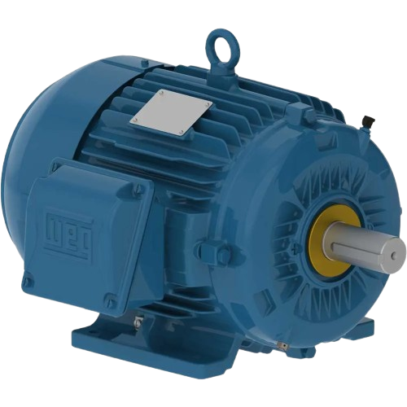

Acionamentos
MOTOR ELÉTRICO DE INDUÇÃO TRIFÁSICO
O que é
O motor elétrico de indução trifásico é uma máquina elétrica que transforma energia elétrica em energia mecânica por meio da indução eletromagnética. Ele é alimentado por uma rede trifásica e é um dos motores mais utilizados na indústria devido à sua eficiência, robustez e baixo custo de manutenção.
Aplicações
É amplamente utilizado para acionar bombas, ventiladores, compressores, esteiras transportadoras, máquinas industriais e diversos equipamentos que necessitam de movimento contínuo e confiável.
